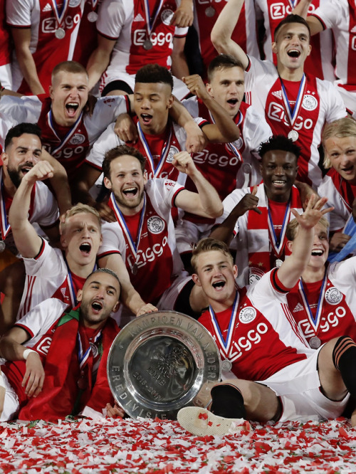

Total de Títulos
EREDIVISIE: 34
UEFA CHAMPIONS LEAGUE: 4
UEFA SUPERCUP: 3
KNVB CUP: 19
Johan Cruijff Schaal: 9
EREDIVISIE (Campeonato Holandês):
1918, 1919*, 1931,
1932, 1934, 1937,
1939, 1947, 1957,
1960, 1966, 1967,
1968, 1970, 1972,
1973, 1977, 1979,
1980, 1982, 1983,
1985, 1990, 1994,
1995*, 1996, 1998,
2002, 2004, 2011,
2012, 2013, 2014,
2019
UEFA CHAMPIONS LEAGUE:
1971, 1972*, 1973, 1995*
KNVB CUP:
1917, 1943,
1960, 1967,
1970, 1971,
1972, 1979,
1983, 1986,
1987, 1993,
1998, 1999,
2002, 2006,
2007, 2010,
2019
Johan Cruijff Schaal (KNVB Supercup):
1993, 1994,
1995, 2003,
2005, 2006,
2007, 2013